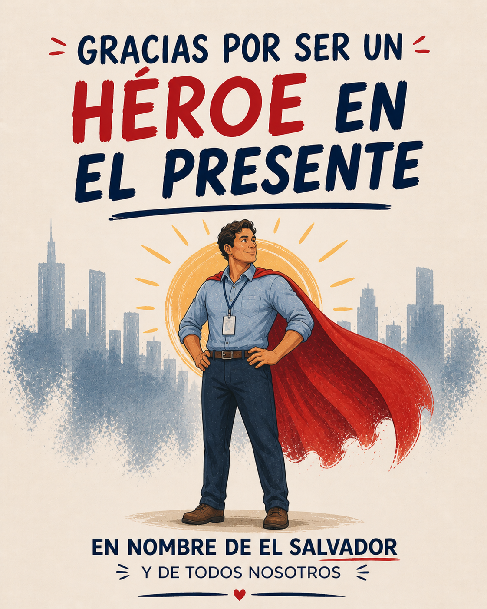
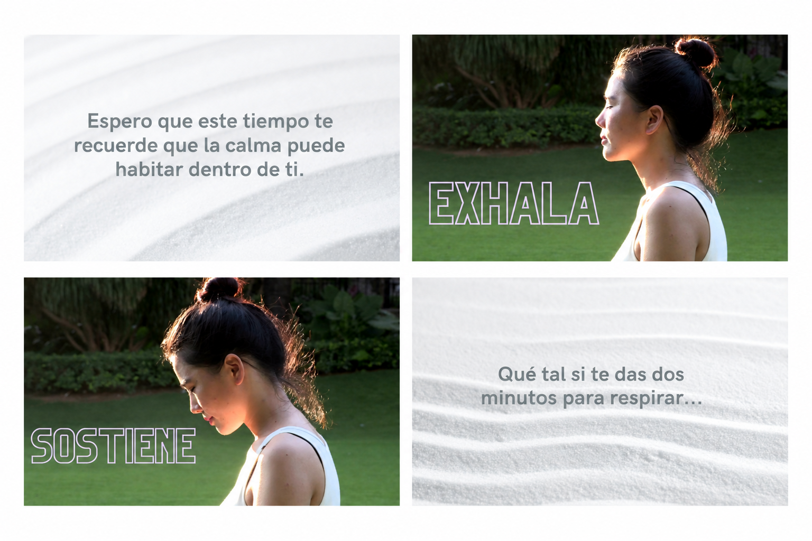
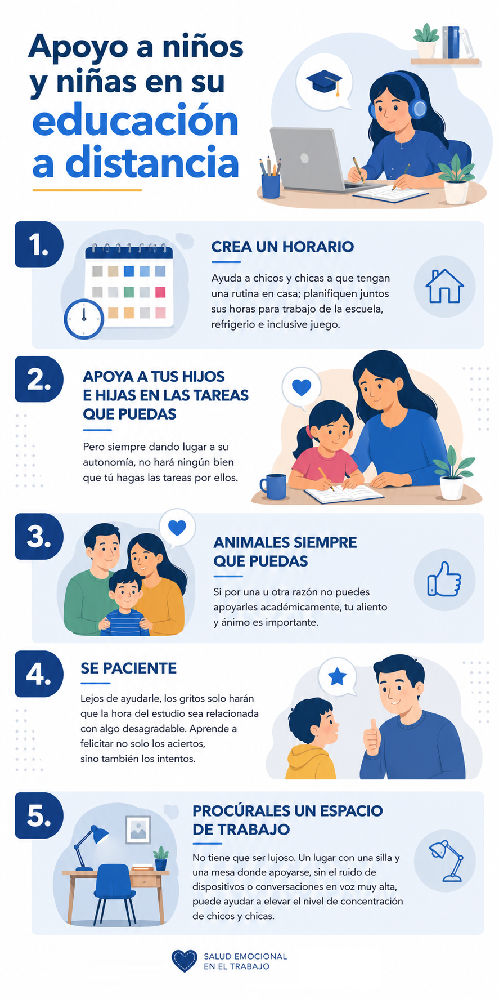
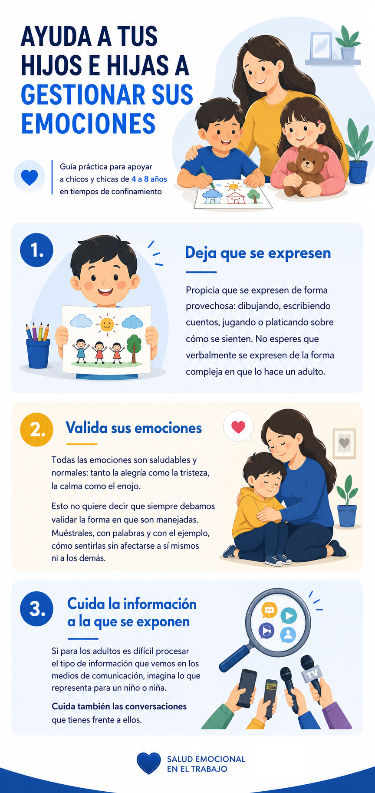
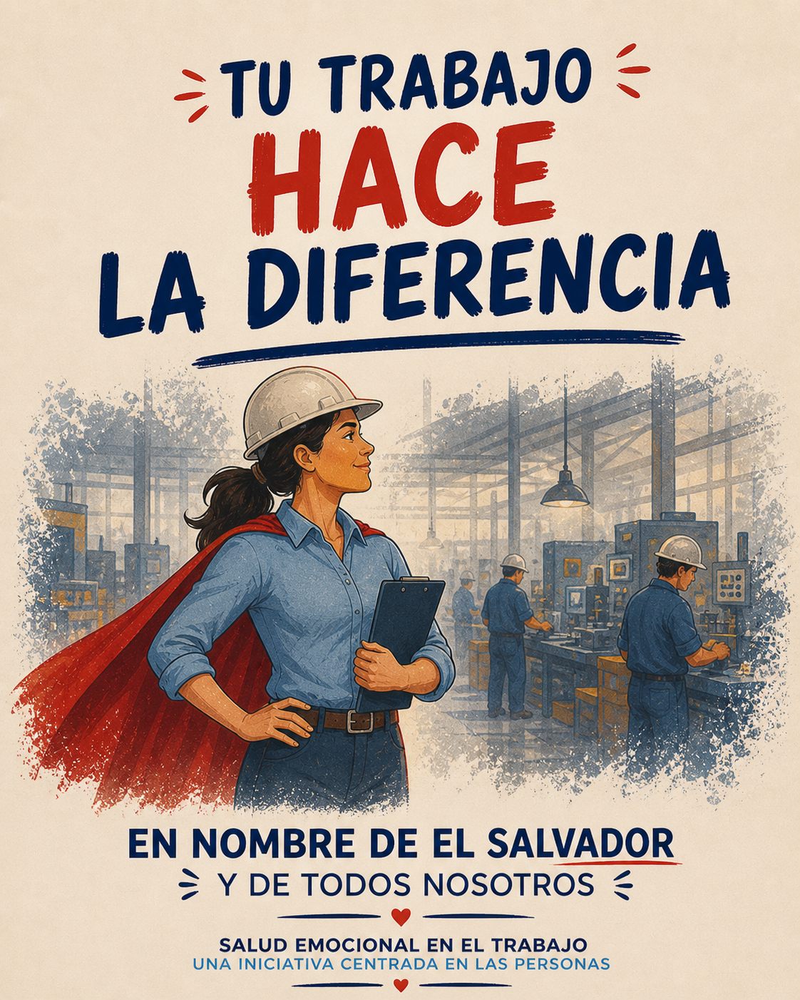

Internal communication materials designed to support emotional wellbeing, awareness, and connection beyond the workplace.

During the COVID pandemic, the Human Resources team wanted employees to feel supported, especially those who continued working on site.
The purpose of this initiative was to create accessible communication materials that could help employees care for themselves, support their families, and feel less alone during a difficult time.
I focused on creating materials that felt calm, human, and supportive during a time of uncertainty.
Beyond providing information, the goal was to offer small moments of pause and emotional relief that employees could access in their everyday lives.
I considered the emotional weight of the moment and designed communication that could offer reassurance, practical guidance, and a sense of connection.




The campaign included recognition based messages that highlighted the importance of each employee’s role.
These visuals reinforced a sense of purpose, belonging, and collective strength.
I considered what employees were experiencing and what kind of support would feel useful, not overwhelming.
I translated emotional and practical topics into clear visuals and approachable language.
I created materials that extended care beyond the workplace and into employees’ everyday lives.
This project reflects my ability to design communication and learning materials that respond to real human needs.
It shows how thoughtful learning design can support people beyond formal training by offering clarity, emotional safety, and practical tools during challenging moments.